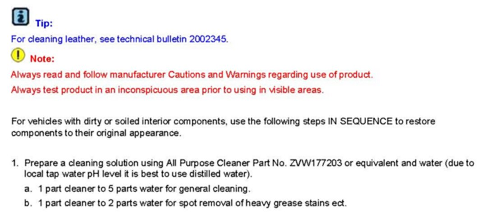

Interior - Cleaning Tips for Vinyls/Plastics/Fabrics
70 08 02Aug. 28, 2008
2002407 Supersedes T.B. Group 70 number 07-06 dated Aug. 10, 2007 due to removal of Routan applicability.
Vehicle Information
Condition
Interior, Cleaning Tips for Fabrics, Vinyls and Plastics
Interior trim panels, seat upholstery, plastic trim or vinyl is dirty or soiled.
Technical Background
Information only.
Production Solution
No production change required.


Service
Warranty
Information only.
Required Parts and Tools
No special tools required.
Additional Information
All part and service references provided in this Technical Bulletin are subject to change and/or removal.
Always check with your Parts Dept. and Repair Manuals for the latest information.